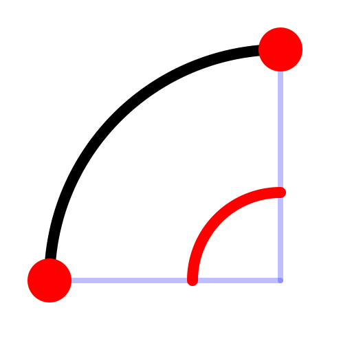

2 Points and Angle
Toolbar / Icon:


Menu: Draw - Arc - 2 Points and Angle
Shortcut: A, 2
Commands: arc2 | a2
Description:
Draws an arc using the start point, end point and the included angle.
Procedure:
- Type the included angle into the options tool bar and choose the arc
direction (clockwise or counter-clockwise).
- Specify the start point of the arc.
- Specify the end point of the arc.